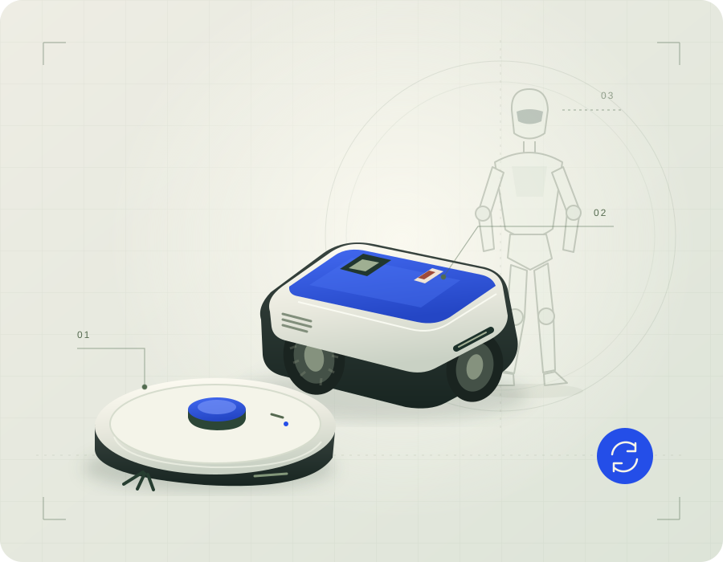

Everyday robots.
Longer lives.
A thoughtful place to choose, care for, and pass on the robots in your life. Useful today. Ready for what’s next.
Home helpers. Garden companions. Tomorrow’s possibilities.
Good questions.
Better robot ownership.
Start with what matters: a good fit, a clear handover, and a little care along the way.
Curiosity, with
both feet on earth.
Tomorrow’s robots raise exciting questions. What can they actually do? What support will they need? And what happens when they change hands?
Future-facing editorial. No humanoid inventory or tested capability claims.
Better questions
are worth sharing.
A few conversation starters for thoughtful robot owners. This is an editorial notebook; community posting is a future possibility.
What would you ask a previous owner?
Start with everyday use, known faults, what is included and the exact model. Ask what a buyer can demonstrate, then use the buying checklist to prepare your own questions.
What belongs in a maintenance notebook?
Record the model, the manual you used, dates of user-serviceable care and observed warning indicators. Keep private account details and complete serial numbers out of shared notes.
What makes a useful robot?
Think in tasks and spaces. A robot that fits your home, routine and support needs can be more useful than one chosen for an impressive feature list.
A next chapter
starts somewhere.
See how thoughtful buying and selling could feel at RebotMarket.